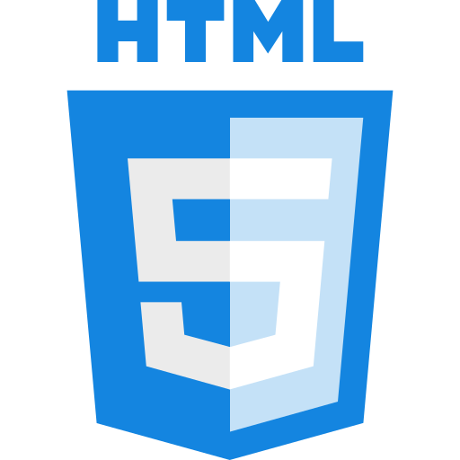
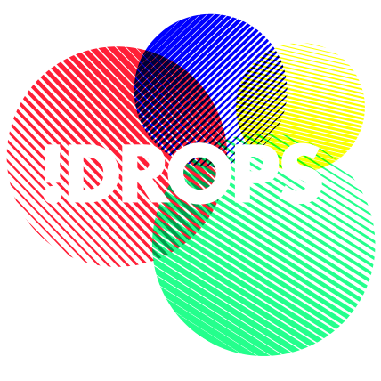

- About
- Skills
- Projects
- Contact
About Me
I'm a student Computer Science @ University Gent. In addition to my studies, I do many other things in the tech world. I freelance for multiple companies, building amazing and scalable applications. I recently acquired the CTO position at District Three Lier, further enforcing my position within the tech world. Next to the business perspective of things, I try to volunteer and help the next generation achieve higher levels of problem solving and critical thinking. Just scroll down to learn more about me!
Technical World
Some things I do...

CoderDojo I'm a coach at CoderDojo Zandhoven & CoderDojo Lier. This is a place where children between 12y and 18y learn how to code and work with electronics. My usual job is to coach Web Development and/or Arduino Fundamentals
FabLab I'm a Mentor at FabLab Zandhoven. A FabLab is a place where individuals can create anything they can imagine with the free tools that are provided by FabLab. This includes a 100W lasercutter, a CNC Machine and two Ultimaker 2+ 3D Printers. My job is to make sure everything goes well and to answer any questions people may have.

District Three I'm the CTO at the coworking and makerspace District Three Lier. With a large amount of electronics supplies and technical machines it's the perfect place to experiment and create. District Three is also the ideal working environment for freelance work.
Web Development
These are the technologies I use the most

HTML 5 "Hypertext Markup Language is the standard markup language for creating web pages and web applications". I personally don't concider it to be a real 'programming' language but probably the most important language of the future. I have been working with HTML for about 5 years now.

CSS & SCSS "Cascading Style Sheets is a style sheet language used for describing the presentation of a document written in HTML". So basically still not a programming language... but just as important as the HTML itself.
JS (ES2020) "JavaScript is a high-level, dynamic, weakly typed, object-based, multi-paradigm, and interpreted programming language". A programming language! It let's you do just about anything in a browser. From creating animations to fetching data externally.
Docker & Docker Compose Docker allowes an application and all of its dependencies to be bundled in a container. This container can easily be deployed on any server with a near perfect certainty that is will run the way it's supposed to.

NodeJS & Mean Stack Node is a very promising but still pretty new implementation. It's basically JavaScript but then on the server side. It gives numerous advantages over PHP but due to the fact that is still new, it's not as widely adopted. It has a very bright future though.
Angular This is an upcoming JavaScript framework. It's used for creating very powerful single page web applications. It is so responsive it almost feels like there is no delay to anything you do. This is probably why so many people are learning and using this framework.
Projects
A list of projects, both personal and commercial.
Websites
Web Apps
Case Studies
Creative Cooling Group
District Three Building an IoT platform to connect all kinds of smart devices. Ranging from climate control to access and motions devices.

BEEGO Building a custom online platform for BEEGO to manage their consultants and workflow.

Action4Rights Development of the Action4Rights Platform. A MEAN Stack Web Application for children to create actions, share feedback and communicate with each other. Helping them in their search for identity.
Mira Systems A web development company I created to design modular web applications.
FabLab Creating a flutter app for access control and user logging. To be available on IOS & Android

FarmLab An IoT Smart Hydroponics farm with an intuitive web portal to view sensors, actuators and overall state.

iDrops Week long robot workshop with the youth of FedAsil Lommel. Brought by Studio Digital, an iDrops initiative.
District Three A front and back-end website for District Three Lier. This includes an inventory and user system built for the future with new technologies.
Atech NV A Wordpress templated created for Atech NV, a transmission company based in Oelegem.
Project Zeppelin This is an open-source project that was built to make learning code easier. The project has a database of multiple programming languages and it's programming ways. It's hosted on GitHub and is editable by anyone. This project was created together with Tom Meyers
AMI IoT Project consisting of a web app and mobile hybrid app to control various sensors and actuators within a house. This ranges from lighting to heating. This app was built on the cordova platform.
FabLab Webplatform concept for user management and user interaction at FabLab Zandhoven.